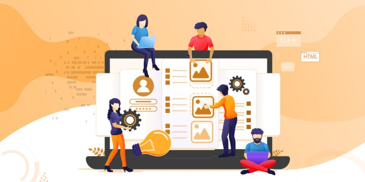
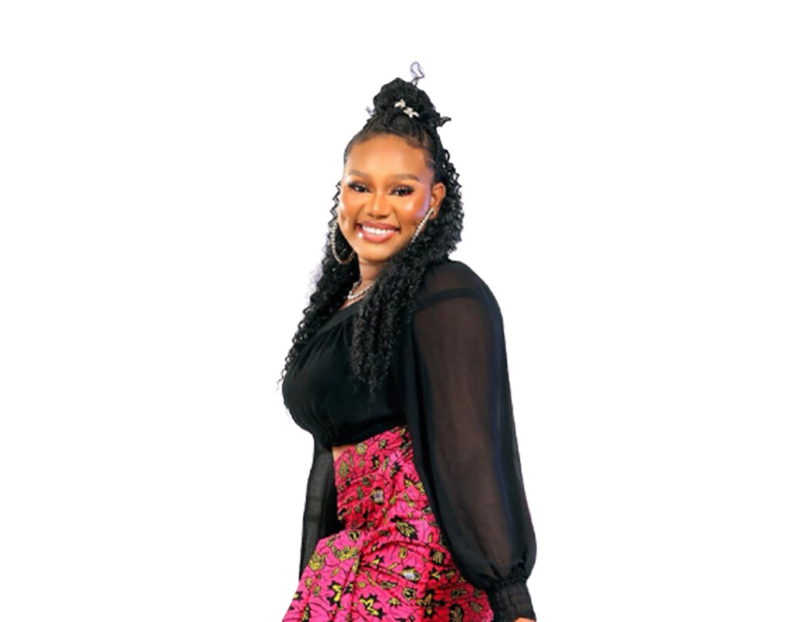
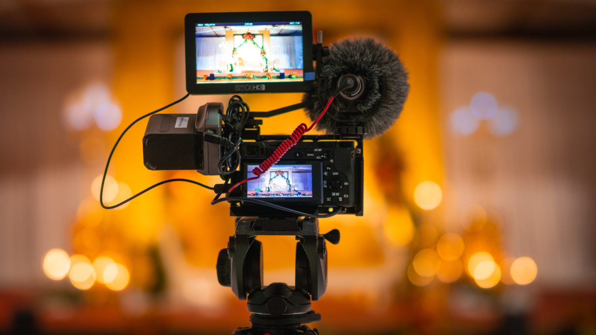
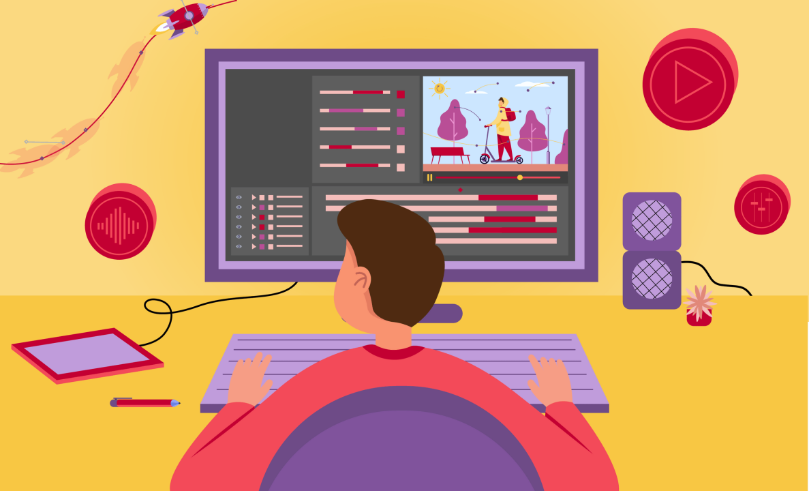
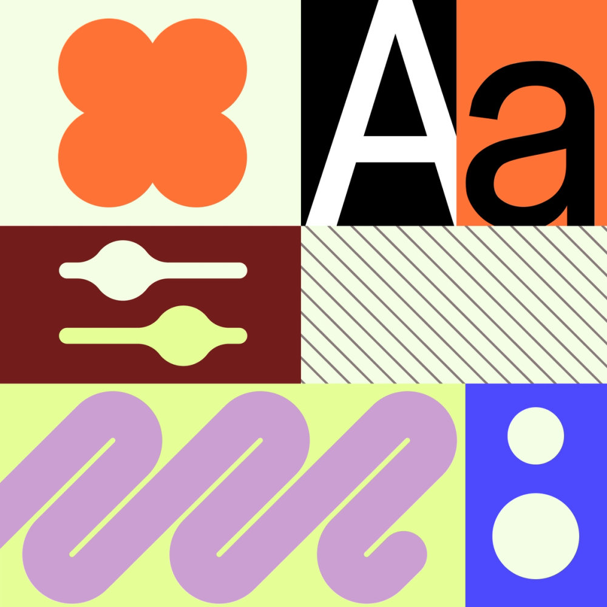
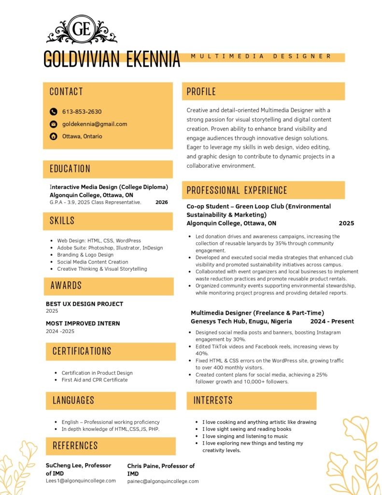

UX Design
Interface and product design explorations including clothing e-commerce, fashion shopping, food delivery, interior design, and rider app concepts.
Multimedia Designer
GoldVivian Ekennia is a multimedia designer with over three years of hands-on experience creating visually engaging work across UX design, photography, videography, motion design, web design, and graphic design.

Portfolio
A curated GitHub Pages version of the portfolio content recovered from the sandbox site.

Interface and product design explorations including clothing e-commerce, fashion shopping, food delivery, interior design, and rider app concepts.
Editorial and portrait imagery featured in the original site portfolio.

Video-focused creative work presented as part of the original showcase categories.

Animated visual storytelling and motion-driven design samples.

Website concepts and layout-driven digital design work.

Brand, print, and visual communication work from the original portfolio collection.
About
Recovered from the original sandbox content, GoldVivian’s portfolio positions her as a multimedia designer working across visual storytelling, digital experiences, and brand-centered execution. The site navigation and media assets suggest a practice spanning both static and motion-based disciplines.
Primary portfolio areas include UX Design, Photography, Videography, Motion Design, Web Design, and Graphic Design.
Credentials
Certificate imagery found in the recovered portfolio export.


Resume
The original portfolio includes both CV and Resume pages. A resume image was recovered from the sandbox export and is included here.

Contact
Contact links recovered from the original portfolio.